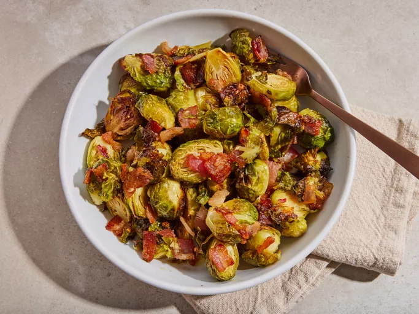

Maple Roasted Brussel Sprouts With Bacon

Description
Brussels sprouts with bacon are roasted with maple syrup until crispy and caramelized for a holiday side dish that's quick and easy to make. The Brussels sprouts take on a nutty flavor during the roasting process, and the salty bacon is a delightful contrast with the sweet maple syrup.
Ingredients
- 1 pound whole Brussels sprouts
- 4 slices bacon, cut into 1/2-inch pieces
- 1/2 teaspoon salt
- 1/4 teaspoon freshly ground black pepper
- 1/4 cup extra-virgin olive oil
- 3 tablespoons pure maple syrup
Directions
- Gather all ingredients. Preheat the oven to 400 degrees F (200 degrees C). Line a rimmed baking sheet with aluminum foil
- Trim ends off Brussels sprouts and cut any large ones in half. Transfer to a large bowl
- Add bacon, salt, and pepper to the Brussels spouts. Drizzle olive oil and maple syrup over top and toss until sprouts are well coated
- Transfer to the prepared baking sheet and spread in a single layer
- Roast in the preheated oven until bacon is crispy and Brussels sprouts are caramelized, 20 to 30 minutes, stirring halfway through
- Serve warm and enjoy!